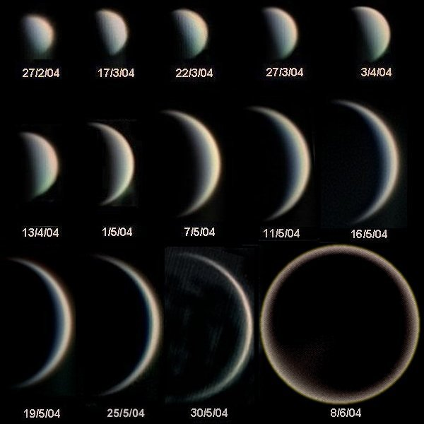

Venus’s Fake Moon 1
This moon is amazing it looks like it’s habitable by humans.
- Diameter (km)
- 22.2 km
- Mass (kg)
- 2×10 ^ 15 km
- Orbital period
- 30.35 h
Venus’s Fake Moon 2
Look at all the pretty colours of this moon—mustn’t be real-colour
- Diameter (km)
- 12.6 km
- Mass (kg)
- 10.8×10 ^ 15 km
- Orbital period
- 30.35 h
Discovery of Venus's Moons

Venus is always brighter than the brightest stars outside our solar system.
Well Venus doesn't actually have moons——unless we haven't discovered them yet——so here's some other details. Venus is always brighter than any star (apart from the Sun). The greatest luminosity, apparent magnitude –4.9, occurs during crescent phase when it is near Earth. Venus fades to about magnitude –3 when it is backlit by the Sun. The planet is bright enough to be seen in a mid–day clear sky, and it can be easy to see when the Sun is low on the horizon. As an inferior planet, it always lies within about 47° of the Sun.
Probes
Mariner 2
The subsequent Mariner 2 mission, after a 109-day transfer orbit on 14 December 1962, became the world’s first successful interplanetary mission, passing 34 833 km above the surface of Venus. Its microwave and infrared radiometers revealed that although the Venusian cloud tops were cool, the surface was extremely hot—at least 425 °C—confirming previous Earth-based measurements and finally ending any hopes that the planet might harbour ground-based life.
Pioneer Venus Orbiter
The Pioneer Venus Orbiter was inserted into an elliptical orbit around Venus on 4 December 1978, and remained there for over 13 years, studying the atmosphere and mapping the surface with radar.
Venus In-Situ Explorer
In 2003, NASA proposed the Venus In-Situ Explorer (VISE), originally proposed for a 2013 launch, currently a candidate to launch by 2022 as part of NASA's New Frontiers program. If selected, it would land and perform experiments on the surface of Venus, including taking a core sample and measuring its composition.
Veritas Orbiter
Veritas orbiter, depicted here would create a radar map at higher resolution than Magellan, and also observe the surface at the wavelengths that can see through the clouds.